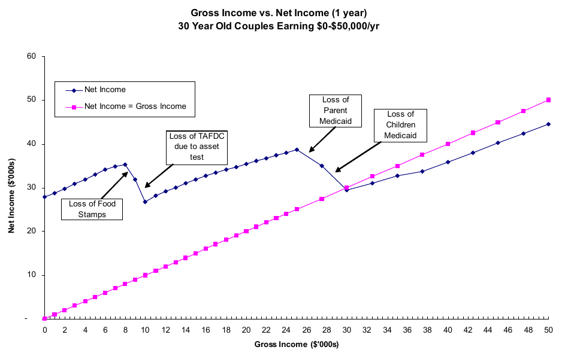

# Policy
## EC 399: Economics of Inequality
## Spring 2017
### Minimum wage
- A lower limit on wages (price floor)
- Becoming more popular politically
- Proponents say it is necessary for low-wage workers to get by
- Opponents say it creates unemployment
### Competitive labor markets
- Many firms
- Many workers
- Perfect information
Equilibrium wages:
- Every worker who is willing to work at the market wage can get a job
- Every firm that wants to hire at the market wage can find workers
### Price floors in competitive markets
If the price (wage rate) is set higher than the market wage:
- There will be a *surplus* in the market
- In labor markets, this means there are more workers willing to work at a the given wage than there are jobs
- This defines unemployment
*Minimum wage creates unemployment in competitive markets*
### Monopsony markets
- Monopoly: single seller
- Monopsony: single buyer
- A monopsony labor market has a single buyer of labor (single employer)
- Monopsonists have the power to set wages---they don't have to "take" the market wage as given
- A firm with wage-setting ability is said to have "monopsony power"
### Minimum wage in monopsonistic markets
- Workers generally have upward-sloping labor supply curves (willing to work more as wages increase)
- Quantity of labor supplied increases as wages increase
- Firms are choosing wages and quantity *simultaneously*
With minimum wage:
- Wages are constant, like a competitive labor market
- Firms will hire *more* workers
*Minimum wage decreases unemployment in monosponistic markets*
### Identifying causal effects
- It is difficult to measure the employment effects of minimum wage
- Places that have high minimum wage are different from places that have low minimum wage (other policy, worker education, employment opportunities, etc)
- One approach is to find the effects of changes in minimum wage on employment relative to some control group
- How do we define the control group?
### Card and Krueger (1994)
- The first "modern" empirical exploration into minimum wage
- Studied 1992 increase in minimum wage in New Jersey
- Conducted an employment survey of fast-food restaurants 2 months before the minimum wage change and 7 months after
- Also surveyed restaurants in eastern Pennsylvania to serve as the control group
- This is known as a "difference-in-differences" approach---both groups might change, so we look at the *relative* change between the two groups (New Jersey and Pennsylvania)
### Card and Krueger results
- Consistently find that minimum wage change in New Jersey *increased* employment
- New Jersey restaurants had greater employment growth over the time period than did their Pennsylvania counterparts
- Employment growth largest among restaurants that paid the least
- Surprising result at the time!
- Consistent with monopsonistic market power
### Criticisms
Measuring minimum wage
- Firms may respond to minimum wages by changing the types of workers they hire, substitute to higher-skill workers
Adjustment time
- Firms may take months or years to adjust to minimum wage, changing technology, training other workers, etc
Parallel trends
- Wage and employment growth in Pennsylvania was different from New Jersey before the minimum wage, perhaps not a good control
### Subsequent research
- No consensus!
- Wide range of estimates depend on how employment is measured, types of industry, types of workers, etc
- Neumark and Wascher (2006) review 108 studies, find increased unemployment in nearly 2/3 (85% of most "credible" studies)
- Effects seem to be concentrated among least skilled workers
### Seattle minimum wage "experiment"
- Starting April 1st, 2015, Seattle starting rising minimum wage rapidly (will eventually be $18/hr)
- UW formed the *Seattle Minimum Wage Study Team*
Preliminary findings:
- Wages for low-wage workers increased
- Hours for low-wage workers decreased
- Effects offset on average---low wage workers no better off after the minimum wage change
- Results very preliminary!
### Krueger, NYT op-ed (2015, on Canvas)
> I am confident that a federal minimum wage that rises to around \$12 an hour over the next five years or so would not have a meaningful negative effect on United States employment.
$~$
> But \$15 an hour is beyond international experience, and could well be counterproductive. Although some high-wage cities and states could probably absorb a \$15-an-hour minimum wage with little or no job loss, it is far from clear that the same could be said for every state, city and town in the United States.
### Minimum wage and inequality
- Suppose a minimum wage increases wages and increases unemployment
- What does this mean for inequality?
Consider:
###### $x = (2, 5, 9, 20, 30)$
###### $x' = (0, 10, 10, 20, 30)$
It depends!
### Tax and transfer policy
- First fundamental theorem of welfare economics: Market outcomes are Pareto efficient
- Second fundamental theorem of welfare economics: Any Pareto efficient outcome can be achieved by a competitive market through transfers
- Most efficient way to redistribute is through cash transfers
### Redistribution and growth
- Growth is very important to well being in the long run (rule of 70)
- Workers are productive---more people working means higher growth
- If transfers make some people less willing to work, will decrease long run well being for everyone
### Marginal tax rates
- Income taxes are levied based on *marginal* earnings
|Taxable Income|Tax Rate|
|---|---|
|\$0 to \$9,225|10%|
|\$9,226 to \$37,450|\$922.50 plus 15% of the amount over \$9,225|
|\$37,451 to \$90,750|\$5,156.25 plus 25% of the amount over\$37,450|
|\$90,751 to \$189,300|\$18,481.25 plus 28% of the amount over \$90,750|
|\$189,301 to \$411,500|\$46,075.25 plus 33% of the amount over \$189,300|
|\$411,501 to \$413,200|\$119,401.25 plus 35% of the amount over \$411,500|
|\$413,201 or more|\$119,996.25 plus 39.6% of the amount over \$413,200|
### Effective marginal taxation
- In addition to paying taxes, people receive credits, deductions, transfers, and benefits
- As income increases, these benefits tend to decrease
- This effectively makes taxes less progressive
- In extreme cases, marginal tax rates can be greater than 100% (making 1 more dollar means you have less total income)
- This can disincentivize low-income earners from seeking new jobs, working longer, etc
Effective marginal taxes

### UBI, NIT, EITC, ETC....
- There are a variety of transfer programs (real and proposed)
- We can think of them in terms of marginal taxes, where taxes can be negative (subsidies)
Dolan (on Canvas) identifies 4 properties a redistribution program should have:
1. It should be effective in reducing inequality
2. People who receive redistribution should be deserving of it
3. It shouldn't affect work incentives (growth concerns)
4. It should be administratively easy to implement
### Simple "top-up"
- Everyone below a certain threshold of income gets an additional amount to get them to that threshold
- This ensures everybody receives a specific, basic level of income
- Paid for by progressive marginal taxes of everyone above the threshold
### Problems with the top-up
- Workers below or near the threshold will have very little incentive to work
- Since benefits reduce by 100% at the threshold, lots of incentives to hide additional income
### Negative income tax (NIT)
- Advocated by Milton Friedman
- Similar to earned income tax credit (EITC) in US
- Taper payments gradually as income rises
- Incentives for work remain at all income levels
### Problems with NIT
- More expensive, benefits accrue to those well above threshold
- People would still want to under-report income
### Universal Basic Income
- Give *everyone* the money equivalent to the threshold amount
- Tax market income to fund the transfer
- Easy to implement, since everyone gets the same amount
- Smaller work disincentives than other programs
### Problems
- Expensive!
- Giving everyone \$20,000 would cost 10% of GDP
- Or a complete overhaul of the current tax system (politically impossible)
### Global UBI
- Suppose we give \$0.75 per day to everyone in the world (poverty line: \$1.90 per day)
- This would \$2 trillion
- Much more than the aggregate aid spending worldwide
### Market-based solutions
American Enterprise Institute (2017) proposes 8 market-based approaches to reducing inequality:
1) Reducing rent-seeking in the form of professional protections
- Example: Doctors in America earn twice as much as doctors in other wealthy countries, but health outcomes are no better
2) Facilitate health travel
- Much of the income gains for low-income workers is in the form of health expenditures
- Rapidly rising costs means that they aren't getting much more health services in exchange
- Making it easier for people to travel for healthcare might reduce health expenditures, allow income to be spent elsewhere
### Market-based solutions
3) Allow medicare expenses to be paid overseas
- Save money for Federal government
- Force US providers to compete with foreign providers in Medicare markets
4) Reform patent system for prescription drugs
- Generic drugs are usually 80-90% cheaper than name-brand, large savings are possible
5) Replace corporate income tax with government shares
- Corporate income tax is highly distortionabry and easy to avoid
- Instead, grant the government a fixed proportion of non-voting shares
- Eliminates distortion, which (hopefully) increases employment
### Market-based solutions
6) Replace patents with tax credits
- Similar to prescription drug proposal
- Copyrights difficult to enforce, courts are overwhelmed
- Incentivize innovation with tax credits instead
7) Replace unemployment insurance with work-sharing
- Unemployment insurance encourages firms to fire workers rather than reduce hours
- Reducing hours keeps people engaged with the workforce, reduces long-term unemployment
8) Vacant property tax
- Encourages landlords to lower rents until housing is no longer vacant
### Policy positions among economists
- The Chicago Booth [*IGM Economics Experts Panel*](http://www.igmchicago.org/igm-economic-experts-panel) surveys top economists about many current policies
- Diverse collection of economists, good for finding if there is consensus in specific policies
- [\$15 minimum wage](http://www.igmchicago.org/surveys/15-minimum-wage)
- [Basic income](http://www.igmchicago.org/surveys/universal-basic-income)
- [Piketty's r-g](http://www.igmchicago.org/surveys/piketty-on-inequality)
- [Inequality and skills](http://www.igmchicago.org/surveys/inequality-and-skills)